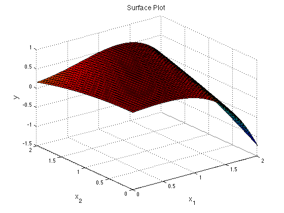
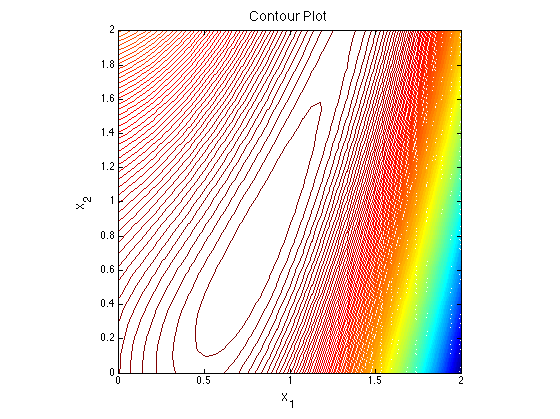
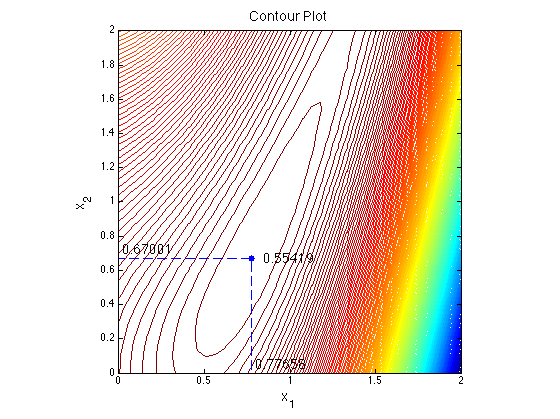

Problem 19.3 Nonlinear Optimization in Two Variables
Maxmize a function of two variables that are both bounded between 0 and 2.
File: Ch19_P03.m
Contents
Function
y = @(x1,x2) -0.1*x1^4 + 0.2*x2*x1^2 - 0.09*x2^2 - 0.11*x1^2 + 0.15*x1 + 0.5;
Visualizing the function
[X1,X2] = meshgrid(linspace(0,2,40),linspace(0,2,40)); figure(1) surf(X1,X2,arrayfun(y,X1,X2)) FS = 'Fontsize'; fs = 14; xlabel('x_1',FS,fs); ylabel('x_2',FS,fs); zlabel('y',FS,fs); title('Surface Plot',FS,fs) figure(2) contour(X1,X2,arrayfun(y,X1,X2),200) FS = 'Fontsize'; fs = 14; xlabel('x_1',FS,fs); ylabel('x_2',FS,fs); zlabel('y',FS,fs); axis('square') title('Contour Plot',FS,fs); 
Solving with fmincon
fmincon is a Matlab function for finding the minimum of a nonlinear function of several variables subject to constraints.
f = @(x) -y(x(1),x(2)); lb = [0;0]; ub = [2;2]; xi = (lb+ub)/2; [xMin,fMin] = fmincon(f,xi,[],[],[],[],lb,ub); yMin = -fMin;
Warning: To use the default trust-region-reflective algorithm you must supply the gradient in the objective function and set the GradObj option to 'on'. FMINCON will use the active-set algorithm instead. For information on applicable algorithms, see Choosing the Algorithm in the documentation. Warning: Your current settings will run a different algorithm (interior-point) in a future release. Local minimum possible. Constraints satisfied. fmincon stopped because the predicted change in the objective function is less than the default value of the function tolerance and constraints are satisfied to within the default value of the constraint tolerance. No active inequalities.
addpath('utilities'); displaytable(yMin,'Maximum Value = '); displaytable(xMin,'xMin');
Maximum Value = 0.55419 xMin(1) 0.77658 xMin(2) 0.67001
Visualization
figure(2); hold on; plot(xMin(1),xMin(2),'.','Markersize',20) plot([xMin(1),xMin(1),lb(1)],[lb(2),xMin(2),xMin(2)],'--'); text(xMin(1),xMin(2),[' ',num2str(yMin)],FS,fs); text(xMin(1)+0.02,lb(2)+0.05,num2str(xMin(1)),FS,fs) text(lb(1)+0.02,xMin(2)+0.05,num2str(xMin(2)),FS,fs) hold off;